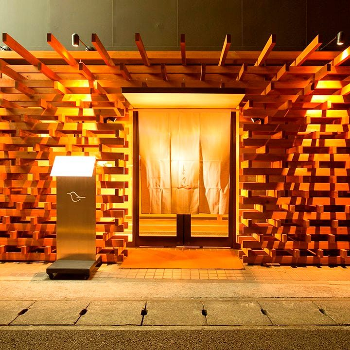
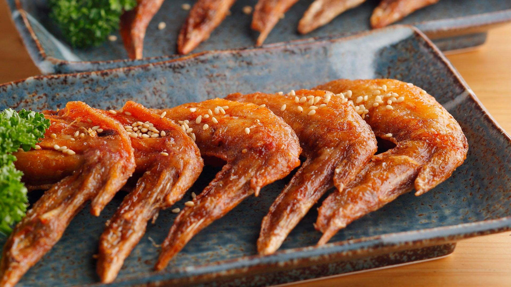
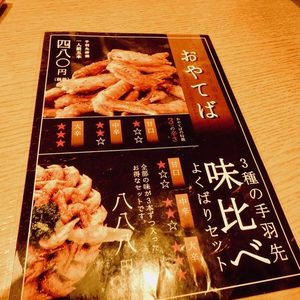
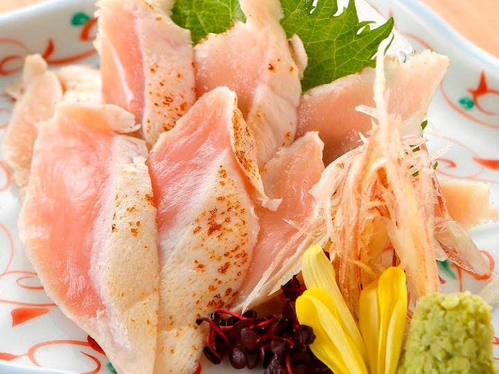
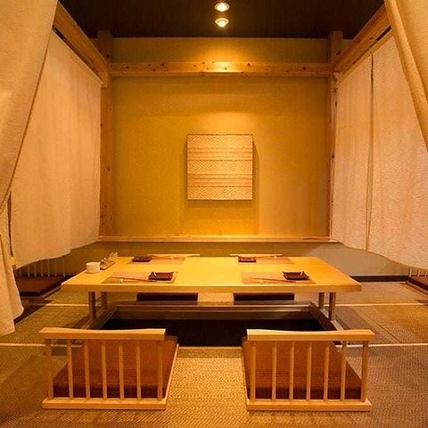
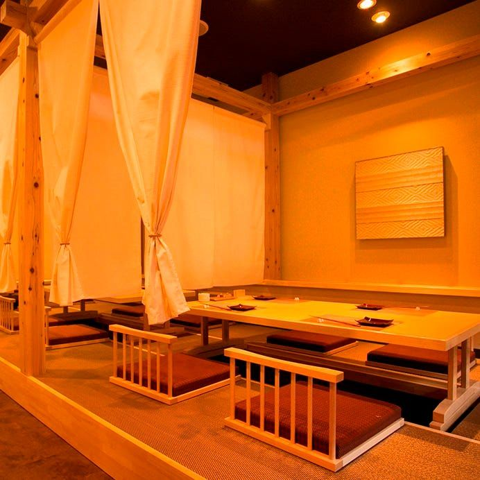
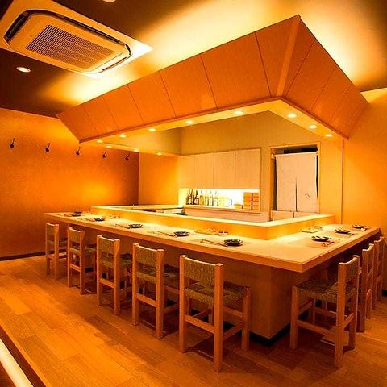
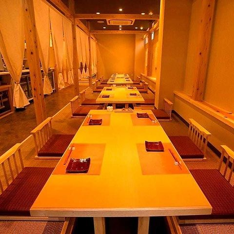
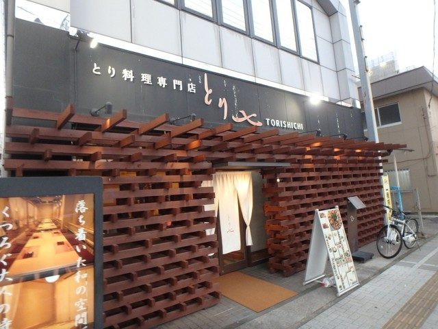

当店の看板は、この手羽先唐揚です。
スパイスは独自にブレンドし、タレは一ヶ月寝かせて仕込みます。揚げ上がりにそのタレをまとわせて、お席へお運びします。
味は五つ。はじめての方には甘口か中辛を、辛いものがお好きな方には大辛を。塩レモンとカレーは、タレの味と並べて召し上がると違いがはっきり出ます。
1人前は5本です。ご人数分をそろえて、味を分けてご注文いただく方が多くいらっしゃいます。
独自にブレンドしたスパイスと、一ヶ月寝かせた秘伝のタレ。
甘口・中辛・大辛の三種に、塩レモンとカレーを加えた五つの味。
大山鶏の手羽先を、1人前5本 748円（税込）でお出ししております。
二種、三種と召し上がり比べていただくのも、おすすめです。

鶏料理の専門店として、刺し・焼き鳥・揚げ物・ご飯ものの四つを柱に据えております。

むねのタタキ、もものタタキ、ササミの刺し。三種を一皿に盛ってお出しします。一種ずつでも承ります。
もも肉、ねぎま、とり皮、レバー、軟骨、砂肝、ハツ、つくね。一本ずつ焼き上げ、どの串もタレと塩からお選びいただけます。
若鶏の半身揚げは2〜3人前。ほかに若鶏の唐揚げ、自家製タルタルのチキン南蛮、葱だく油淋鶏をご用意しております。
締めは美栄卵の親子丼か、卵かけご飯を。あっさりと終えたい夜には南高梅茶漬け、とり七そばもございます。季節の釜飯は、ご宴会のコースでご用意しております。



店内は、入って右側が全席掘りごたつのお座敷です。暖簾を下ろせば半個室になり、まわりを気にせずお過ごしいただけます。
靴を脱いでお上がりいただく造りですので、足を伸ばしておくつろぎください。
全席禁煙、65席。おひとりの方にはカウンターもございます。

歓送迎会、接待、同期の集まりに。少人数の半個室から大人数のお席まで、ご人数に合わせてご用意します。
コースは、飲み放題つきの厳選料理八品 5,000円（税込）から。2時間半以上のご宴会も承ります。日取り・ご人数・ご予算を、お電話でお聞かせください。
ご宴会のご相談・ご予約は、お電話で承ります。「名物の手羽唐揚げは外はパリッと香ばしく、中はジューシーで、秘伝のタレがしっかり絡んだクセになる美味しさ」
お客様の声より（2026年7月）
「土曜17:30入店、店内とても綺麗で予約席含めるとほぼ満席」
お客様の声より（2026年7月）
「駅近がよくこちらに決めました。店内禁煙なので飲み会として悩みましたが良かった」
お客様の声より（2025年9月）
ご来店の前に、お知らせしておきたいことをまとめました。
| 営業時間 | 月〜木 17:00〜23:00（料理 L.O. 22:00／お飲みもの L.O. 22:30） 金・土 17:00〜23:30（料理 L.O. 22:30／お飲みもの L.O. 23:00） |
|---|---|
| 定休日 | 日曜日 |
| お支払い | 現金のほか、クレジットカード（VISA・Master・JCB・AMEX・Diners・Discover）、交通系電子マネー・iD・QUICPay、PayPay・楽天ペイ・d払い・au PAYをお使いいただけます。適格請求書（インボイス）もお出しします。 |
| 駐車場 | 専用の駐車場はございません。お車の方は、近くのコインパーキングをご利用ください。 |
